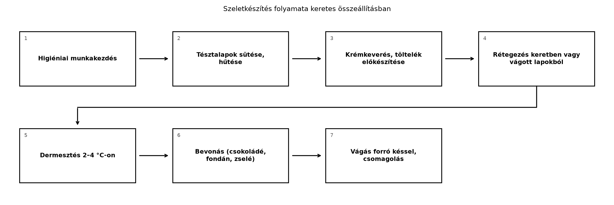

Reggel hat óra van. A zserbó lapja előző nap elkészült és kihűlt, a rendelés 80 db, az átadás 11 órakor. A cukrász kiemeli a kihűlt, egyben megsütött lapot, megkeni a tetejét csokoládéval, és elindul a hűtőbe dermedni. Ha a rétegek egyenletesek, a vágás pontos, a darabok tömege egyforma, a vendég ugyanolyan szeletet kap, mint amilyet a pultban látott. Ha nem, a legszebb torta is hulladék lesz. Ebben az alfejezetben a szeletek általános műveleteit és a hagyományőrző termékeket tanuljuk meg: hogyan lesz egy keretbe rétegzett tésztából és krémből szögletes, egyforma, jól csomagolható kikészített sütemény.

A folyamatábra mutatja a hét alapműveletet. A tésztalapok lehetnek külön megsütött szögletes lapok, vagy egy keretben sütött felvert tészta. A lapokat és töltelékeket váltakozó rétegekben egymásra építjük, majd hűtéssel szilárdítjuk. A vágás előtti dermedés teszi lehetővé, hogy a krém ne kenődjön ki, a szeletek élei tiszták legyenek.
Definíció. A szelet olyan kikészített cukrászati sütemény, amelyet több tészta- és töltelékrétegből, keretben vagy szögletes lapokból állítanak össze, hidegen dermesztik, majd egységes méretű, általában téglalap alakú darabokra vágnak, és gyakran egyenként csomagolnak. A szelet a tortánál kisebb adagú, a minyonnál nagyobb, és rendszerint a pultból, darabra értékesítik.
A szeletek jellemzői: - szabályos téglalap vagy négyzet alaprajz; -
egyenletes rétegsor: tészta–töltelék–tészta, a tetején gyakran bevonóval
vagy díszítéssel; - jól szeletelhető, tiszta vágási felület; - 6–8 cm
hosszú, 4–5 cm széles darabok, tömegük kb. 50–80 g
(ellenőrizendő: a házi/üzemi szabvány szerint); - a hűtött
tárolást igénylő krémes, tejszínes termékek zárt, hűtött pultba
kerülnek.
A szeletek tésztája lehet: - felvert tészta (hideg vagy meleg úton), pl. lúdláb, puncsos szelet; - omlós tészta (gyúrt, kevert), pl. zserbó, Rákóczi túrós; - mézes tészta, pl. mézes krémes; - vajas, leveles tészta, pl. krémes (de az a Krémesek: vajas/leveles és forrázott tésztából alfejezetben külön); - élesztős vagy omlós élesztős tészta, pl. pozsonyi kifli, beigli, de ezeket az uzsonnasütemények között tárgyaljuk.
A tésztákat a kikészített sütemények és torták alfejezetben tanult módon készítjük, de szeletekhez a formát szögletesre alakítjuk. A felvert tésztát gyakran magas peremű tepsiben vagy keretben sütjük, hogy utána egyenes lapot tudjunk vágni.
Továbbvitt eredmény. A szeletvágás és darabszám-számítás itt tanult módszerét közvetlenül használjuk a Tekercsek szeletelésénél és a Minyonok és minyon jellegű készítmények vágási műveleteinél, valamint a kalkulációs és vizsgafeladatokban.
A keretes összeállítás fogásait a képsor mutatja: a keret és a bélés, a rétegezés, a lenyomatás, a dermesztés utáni bevonás és a meleg késes szeletelés.
A töltelékeket a Gyümölcstöltelékek, olajos magvas és tartós töltelékek, a Vajkrémek: főzött, tojássárgás, habcsókos vajkrém és a Tejszínkrémek, bavarois, mousse és ganache-krémek alfejezetekben leírt technológiákkal készítjük. A szeletekhez a következő típusok a leggyakoribbak: - vajkrém vagy főzött sárgakrém vajjal felhígítva; - tejszínkrém; - diós, olajos magvas töltelék; - túrós töltelék; - gyümölcszselé vagy lekvár, amely nem folyik el vágásnál.
A krém hőmérséklete akkor megfelelő, ha könnyen kenhető, de már szilárdulni kezd. A túl meleg vajkrém megolvasztja a lapokat, a túl hideg nem kenhető el egyenletesen. A keverésnél ügyeljünk arra, hogy a vajkrémet ne verjük túl, mert levegős lesz, és a szelet vágáskor morzsálódik.
A tésztalapokat hidegen, egyenletes vastagságban kenjük meg. A lapot teljes felületén, a szélekig töltsük, de a széleket ne kenjük túl. Ha a töltelék lekvár vagy zselé, vékony réteg kerüljön, nehogy kicsússzon a rétegek közül. A rétegeket enyhén nyomkodjuk le, hogy a légbuborékok távozzanak, de ne nyomjuk szét a habos krémet. A keretes összeállításnál a keretet sütőpapírral vagy fóliával béleljük, a lapokat méretre vágva belehelyezzük, és a krémet rásimítjuk.
A töltött szeletet vágás előtt 2–4 °C-on kell lehűteni és dermedni
hagyni (ellenőrizendő: hatályos jó higiéniai gyakorlat). A
dermedés időtartama a krém zselésítő- és zsiradéktartalmától függ,
általában 1–4 óra. A dermesztés célja: - a vajkrém vagy tejszínkrém
kellően megkeményedik; - a zselatin vagy pektin gél szilárdra köt; - a
rétegek nem csúsznak el vágás közben; - a vágási felület tiszta lesz, a
krém nem kenődik ki a pengére.
A bevonás a szelet tetejét és esetleg oldalát borítja. A leggyakoribb bevonók: - temperált étcsokoládé vagy bevonómassza; - hidegen zselézett vagy nem zselézett fondán; - áthúzó ganache; - tükörbevonó (inkább modern mousse-szeleteknél); - lekvárral rögzített csokoládé vagy pirított dió.
A csokoládét a csokoládé temperálása szerint készítjük, a fondánt a fondán melegítése szerint. A bevonatot egyenletesen, gyorsan kell felhordani, mert a meleg bevonat megolvaszthatja a hideg krém felületét. A bevonat vastagsága 1–2 mm, ne legyen túl vastag, mert a vágásnál pattanhat.
A vágáshoz hosszú, keskeny pengéjű, egyenes élű kést használunk. A pengét forró, tiszta vízbe mártjuk, tiszta konyharuhával szárazra töröljük, majd egy határozott, de nem erőteljes mozdulattal merőlegesen levágjuk. A forró kés megolvasztja a bevonatot és a krém szélét, így a vágási felület sima, fényes marad. A pengét minden vágás után újra melegítsük és töröljük le. A vágás előtt a szeletet a keretből kiemeljük, és éles, mérőszalaggal jelöljük ki a vágási osztásokat. A vágási veszteség (a levágott szélek) 1–2 cm oldalanként; a darabszám-számításnál ezt figyelembe vesszük.
Figyelem. A forró kés égési sérülést okozhat. A pengét fogóval vagy hőálló kesztyűvel töröljük, a pengét ne érintsük puszta kézzel. A műveletet oktatás után, felügyelet mellett végezzük.
A kész szeleteket tálcára rakjuk úgy, hogy ne érjenek egymáshoz. A
krémes és tejszínes szeleteket 2–4 °C-on, zárható dobozban tároljuk, és
a pultban is hűtve kínáljuk
(ellenőrizendő: hatályos előírás). Az egyenkénti
csomagoláshoz élelmiszerrel érintkezésre alkalmas fóliát vagy papírt
használunk. A csomagoláson fel kell tüntetni a termék nevét, az
összetevőket, a jelölendő allergéneket és a durabilitási jelölést a
fogyasztói tájékoztatási rendelet szerint: a romlandó krémes és
tejszínes termékeknél a fogyaszthatósági időt („fogyasztható:”), tartós
terméknél a minőségmegőrzési időt
(ellenőrizendő: 1169/2011/EU). A csomagolás nélküli pultos
értékesítésnél az allergén-információt a vásárló kérésére szóban vagy
kihelyezett tájékoztatóval kell megadni.
A magyar cukrászat több szelete nemcsak termék, hanem a magyar cukrászat élő hagyománya is (a hagyományőrző jelleg nem jelent jogi oltalmat, lásd a További hagyományőrző és klasszikus magyar torták alfejezetet). Az alábbiakban a három leggyakoribb hagyományőrzőt mutatjuk be: a zserbót (Gerbeaud-szelet), a Rákóczi túróst és a mézes krémes. A lúdláb szintén hagyományos, de a vizsgaközpont vagy a mester termékválasztása szerint változhat; ezért itt csak röviden említjük.
A zserbó hagyományos magyar szelet: omlós tésztalap, baracklekvár,
diós töltelék, csokoládébevonat. A hagyományos szakmai gyakorlatban a
zserbó tésztája élesztővel lazított vajas omlós tészta, három lap között
két réteg baracklekvárral és cukros dióval, tetején csokoládémázzal
(ellenőrizendő: szakmai testületi receptgyűjtemény). Az itt
közölt egyszerűsített tanulási változat a gyúrt omlós tészták között tanult, élesztő nélküli
sárga linzer alapú, két lapból és egy töltelékrétegből áll, ezért a
hagyományos háromlapos, élesztős receptúrától eltér. Az eredeti arányok
a cukrászattörténeti forrásokban és a szakmai testületi gyűjteményekben
találhatók, ezért az itt megadott recept tanulási célú, az eredeti
arányok ellenőrizendők. A tésztalapokat vékonyra nyújtjuk, hogy a
töltelék domináljon, de a tészta ne törjön.
A Rákóczi túrós omlós tésztaalapból, édes túrós töltelékből, a tetején tojáshabrácsból és baracklekvárból készül. A túrós tölteléket sűrűre főzzük, hogy ne áztassa el az omlós lapot sütés közben. A habrácsot habzsákból, vékony sávokban nyomjuk a töltelékre, a baracklekvárt a kis négyzetekbe töltjük. A hagyományos Rákóczi túrós sütése két fázisú: elősütött tésztalapra kenjük a tölteléket, majd a habbal együtt készre sütjük. A hab könnyű, kissé pirult, a lekvár fényes marad.
A mézes krémes több vékony, sötét mézes lapból és főzött,
búzadarás-vajas (vaníliás) krémből áll, gyakran vékony lekvárréteggel
(ellenőrizendő: szakmai testületi receptgyűjtemény). A
mézes lapokat a mézes tészták alfejezetben
tanult technológiával készítjük: a tésztát hidegen érleljük, vékonyra
nyújtjuk, és 170–190 °C-on sütjük. A krémet a hagyományos változatban
főzött búzadarás krémből és vajból készítjük. A lapok vékonyak és
hajlékonyak, a krémnek jól kell töltenie, de a vágásnál nem szabad
kifolynia. A mézes krémes tetejét porcukorral vagy csokoládéval
díszítjük.
A lúdláb kakaós felvert tésztalapból, meggyel tűzdelt csokoládés
krémből és csokoládébevonatból áll
(ellenőrizendő: szakmai testületi receptgyűjtemény). A
termékválasztás a vizsgán módosulhat; a lúdláb technológiája a felvert tészták és a vajkrémek fejezetekben tanultakat kombinálja.
Recept.
A recept egy 30×40 cm-es tálcára készül, és kb. 36–50 db 6×4 cm-es szeletet ad, a vágási veszteségtől függően. Az arányok a szakmában elterjedt tanulási receptnek felelnek meg, az eredeti Gerbeaud-házi arányok ellenőrizendők.
Tészta (omlós): 1. A hűtött vajat a liszttel és a
sóval elmorzsoljuk, majd porcukrot, tojássárgát és reszelt citromhéjat
adunk hozzá. 2. Gyors mozdulatokkal összegyúrjuk, hogy a tészta ne
melegedjen fel, fóliázva 1 órán át hűtőben pihentetjük
(ellenőrizendő: a hűtő hőmérséklete). 3. A tésztát két
egyenlő részre osztjuk, és 30×40 cm-es téglalapra nyújtjuk, 3–4 mm
vastagra.
Diós töltelék: 4. A cukrot kevés vízzel felforraljuk, a darált diót belekeverjük, vajjal és rummal ízesítjük, langyosra hűtjük.
Összeállítás és sütés: 5. Az első tésztalapot
sütőpapírral bélelt tepsibe tesszük, megkenjük a baracklekvárral,
rásimítjuk a diós tölteléket, majd befedjük a második lappal. 6. A
tetejét villával megszurkáljuk, és 180 °C-on 30–35 percig sütjük,
aranybarnára (ellenőrizendő: sütő típusa szerint). 7. A
kihűlt lap tetejére temperált étcsokoládét vagy olvasztott
bevonócsokoládét kenünk vékony rétegben, és hidegen megdermesztjük.
A szeletek méretét az üzleti szabvány, a rendelés vagy a csomagolás mérete határozza meg. A leggyakoribb méretek: 6×4 cm, 8×5 cm, 5×5 cm. A darabszám elméleti értékét a tálca vagy keret hasznos felületéből számítjuk.
Jelölés: - a tálca hossza (cm), - a tálca szélessége (cm), - a szelet hossza (cm), - a szelet szélessége (cm), - a maximális darabszám.
Az oszlopok és sorok számát a tálca méretének és a szeletméretnek az egészrésze adja, mert fél szeletet nem értékesítünk:
ahol az egészrész. Mindkét tájolást kiszámoljuk (a szelet hosszát a tálca hosszához vagy szélességéhez illesztve), és ha a szeletirány nem kötött (például nincs rétegirányú díszítés), a nagyobbat választjuk.
Számítás. 1. példa: 60×40 cm-es keretből 6×4 cm-es szeleteket vágunk.
.
Ellenőrzés: 10 db × 6 cm = 60 cm hossz; 10 sor × 4 cm = 40 cm szélesség. A teljes felület pontosan kihasználható, ha a vágási veszteség elhanyagolható.
Számítás. 2. példa: a gyakorlatban a levágott szélek miatt a hasznos hossz és szélesség kisebb. Ha oldalanként 1 cm-t levágunk, akkor a hasznos méret cm. Az oszlopok száma , a sorok száma , azaz egy tájolásban db. Elforgatva (a 6 cm-es oldal a 38 cm-es oldallal párhuzamos) db, tehát a maximum db, ha a szeletirány nem kötött; kötött irány esetén 81 db. A maradék hulladék is hasznosítható. Ezt a fajta számítást a receptúra és anyaghányad fejezetben tanult szorzószámhoz hasonlóan végezzük.
Az alaprajzon látszik, hogy a levágott szél után a hasznos 58 × 38 cm-es felületből 9 oszlop és 9 sor szelet jön ki; a jobb oldali 4 cm-es és a felső 2 cm-es csík maradék.
Összefüggés. A szükséges adagszám és a tálcánkénti darabszám hányadosa adja a gyártandó tételek számát:
ahol a felfelé kerekítés jele . Például 200 db megrendelés és 81 db (vagy elforgatva 84 db) tálcánként esetén tétel.
Cél. Hagyományőrző zserbó szelet készítése, egyenletes rétegekkel, csokoládébevonással és pontos vágással. A gyakorlat a gyúrt omlós tészták és a Gyümölcstöltelékek, olajos magvas és tartós töltelékek fejezetekben tanultakat kapcsolja össze.
Eszközök és anyagok. Tepsik (30×40 cm), keverőtál, habkártya, sziliciumos lap, nyújtófa, kés, villa, sütőpapír, hűtő, mérleg, mérőszalag, habzsák (Rákóczi túróshoz), forró vizes edény a kés melegítéséhez, élelmiszer-fólia.
Higiéniai munkakezdés. Tiszta munkaruha, hajháló, ékszer le, rövid köröm, kézmosás. A munkafelületet előbb meleg, mosószeres vízzel, majd tiszta vízzel leöblítjük, szükség esetén élelmiszeripari fertőtlenítővel kezeljük. A tojást, vajat, tejet, diót, lekvárt átvettük, nyomon követhetőségük megvan. A diós töltelékhez a diót felhasználás előtt ellenőrizzük: ne legyen avas, penészes, a csomagolásán a minőségmegőrzési idő lejárta előtt használjuk fel.
Biztonsági korlát. A sütő kezelése oktatás után, felügyelet mellett történik. A forró tepsit edényfogóval, hosszú ujjú védőkesztyűvel fogjuk. A forró kés és a csokoládéolvasztás égésveszéllyel jár, puszta kézzel ne érintsük. A gépi keverés tanműhelyi vagy üzemi környezetben, oktatás után és felügyelet mellett végezhető; otthon háztartási géppel, kis adagban gyakorolj.
Technológiai lap.
A lap a zserbóra vonatkozik, a receptúra 30×40 cm-es tálcához szól.
Termék neve: Zserbó (Gerbeaud-szelet). Termékcsoport: omlós tésztából készült, diós-lekváros töltelékkel, csokoládébevonattal. Alapmennyiség: 1 tálca 30×40 cm, kb. 36–50 db 6×4 cm-es szelet.
Anyaghányad táblázat:
| Nyersanyag | Mennyiség (g) | Megjegyzés |
|---|---|---|
| Liszt (tészta) | 400 | BL 55 vagy omlóshoz ajánlott liszt |
| Vaj (tészta) | 250 | hűtött, kockázva |
| Porcukor (tészta) | 120 | átszitálva |
| Tojássárgája (tészta) | 30 | kb. 2 közepes tojás (ellenőrizendő: tömegosztály) |
| Só | 2 | |
| Citromhéj | 3 | reszelve |
| Baracklekvár (töltés) | 200 | sűrű, sütésálló |
| Dió (töltelék) | 300 | darálva |
| Cukor (töltelék) | 200 | kristálycukor |
| Vaj (töltelék) | 50 | |
| Rum (töltelék) | 10 ml | elhagyható, alkoholtartalom |
| Étcsokoládé (bevonat) | 250 | temperálva, vagy bevonócsokoládé |
| Összes tömeg | 1815 | a késztermék tömege sütési veszteség után kisebb |
Eszközök és gépek: mérleg, keverőgép vagy habverő, gyúródeszka, nyújtófa, sütőpapír, tepsi, sütő, hűtő, kés, mérőszalag, paletta, forróvizes edény.
Műveleti sorrend számozott lépésekkel:
Kritikus pontok (élelmiszerbiztonság) és technológiai kulcspontok:
Allergének. A termék a 14 jelölendő allergén közül tartalmazhat: glutén (búzaliszt), tojás, tej (vaj, csokoládé), diófélék (dió), kén-dioxid (a baracklekvárban, ha tartósított). Az alkohol (rum) nem allergén, de a vendég figyelmét fel kell hívni rá. A csokoládé szóját is tartalmazhat; a gyártói címke alapján ellenőrizni kell.
Minőségi jellemzők: a szelet formája szabályos téglalap; mérete 6×4 cm, tömege kb. 35–45 g, a sütési veszteségtől függően (a tényleges értéket próbagyártással határozzuk meg); felülete egyenletesen fényes, repedésmentes csokoládé; metszete tészta–baracklekvár–diós töltelék–tészta éles rétegekkel; íze diós, lekváros, vajas; állaga a tészta omlós, a töltelék sűrű, a bevonat roppanós.
Tárolás, eltarthatóság: hűtve 2–4 °C-on, zárható dobozban, 3
napig; a csomagolt szeletek minőségmegőrzési ideje a felhasznált
alapanyagoktól függ
(ellenőrizendő: saját gyakorlati tapasztalat, HACCP-tanulmány).
Tálalás előtt 10–15 perccel szobahőmérsékletre melegedhet, hogy az ízek
érvényesüljenek.
A gyakorlat során a diós tölteléket langyosra hűtve kenjük, a baracklekvárat habkártyával egyenletesen simítjuk. A csokoládébevonatnál ügyeljünk arra, hogy a tészta hideg legyen, de ne fagyos, mert a bevonat megrepedhet. Vágás előtt a forró pengét minden vágás után tiszta ronggyal letöröljük, így a szeletek oldala nem maszatolódik.
A szelet minőségét érzékszervi vizsgálattal és tömegellenőrzéssel értékeljük.
Megjelenés: - A alak szabályos, a vágási élek egyenesek, a méretek azonosak. - A bevonat fényes, egyenletes, nincs rajta repedés, folyás, matt folt. - A rétegek párhuzamosak, a töltelék nem csúszott el.
Belső szerkezet: - A metszeten a rétegek élesen elkülönülnek: tészta, lekvár, diótöltelék, csokoládé. - A tészta omlós, nem száraz, nem nyers. - A töltelék sűrű, nem folyik ki, a dió egyenletesen oszlik el.
Íz és illat: - A dió friss, pörkölt illatú, nem avas. - A baracklekvár savassága kiegyensúlyozza a cukros tölteléket. - A csokoládé tiszta, keserédes ízt ad.
Tömegellenőrzés: Minden tálcáról vegyünk mintát, mérjünk le 5–10 db szeletet. A megengedett eltérés a megadott tömeghatár ±5% lehet. Ha a szelet névleges tömege 40 g, az elfogadható tartomány 38–42 g. A pontatlan vágás miatti nagy szórás hibának számít.
A vágási felület maszatos, a krém rákenődik a pengére. Tünet: a szeletek oldala csíkos, a rétegek nem látszanak. Ok: a termék nem volt eléggé lehűtve, a kés hideg vagy vizes. Megelőzés: legalább 2–4 °C-ra hűtött terméket vágjunk, a pengét minden vágásnál forró vízbe mártjuk és szárazra töröljük.
A bevonat megreped a vágáskor. Tünet: a csokoládé törik, a felület repedezett. Ok: a bevonat túl vastag, vagy a szeletet túl hidegen vágtuk. Megelőzés: a bevonat 1–2 mm vastag legyen, vágás előtt a terméket 5–10 percre szobahőmérsékletű helyiségbe tesszük, de ne melegedjen fel. Javítás: a repedt darabokról a bevonatot le lehet csorgatni, újra kenjük, de a minőségi osztályozásban hibásnak számít.
A töltelék kicsúszik a rétegek közül. Tünet: a szelet oldalán a lekvár vagy diós töltelék kifolyik, a réteg vékony, a szomszédos tészta elázik. Ok: a töltelék túl híg, túl meleg, vagy túl vastagon kenték. Megelőzés: a lekvárt sűrítsük (pl. almapektinnel vagy rövid forralással), a diós tölteléket langyosra hűtve, egyenletesen, max. 4–5 mm vastagon kenjük. Javítás: a kifolyt tölteléket tiszta pengével levágjuk; ha indokolt, a szeletet újra dermesztjük.
A tésztalapok nem tapadnak össze, leválnak a töltelékről. Tünet: a szelet szétesik emeléskor. Ok: a tészta túl száraz, a töltelék túl száraz, vagy a rétegek közé nem került kötőanyag (pl. lekvár, barackíz). Megelőzés: a tésztát ne süssük túl szárazra, a töltelékbe adjunk kevés baracklekvárt vagy vajat, és a lapokat melegen, a töltelékkel együtt préseljük. Javítás: az ilyen szeletet lekvárral vagy krémmel újra lehet rétegezni, de a minőségi szabványtól eltér.
Egy cukrászda hétvégére 80 db zserbószeletet kapott rendelésre, csomagolva, tálcán. A termelő a diós tölteléket előző nap főzte meg, de nem hűtötte le gyorsan, hanem éjszakára a pulton hagyta. A műszakvezető reggel észrevette, hogy a töltelék hűtés nélkül állt, és nem lehetett megmondani, mennyi ideig volt a veszélyzónában. A tölteléket selejtezték, újat főztek és gyorsan lehűtötték (ellenőrizendő: üzemi HACCP-eljárás). A sütés utáni, még meleg lapra a csokoládét is túl korán kenték, ezért a bevonat elkenődött, a vágási felület maszatos lett; a konyhafőnök a lapot kihűtette, a bevonatot újrakente, és éles, forró késsel vágott. A rendelés időben elkészült, de a tömegszórás miatt 5 db-ot pótolni kellett. A tanulság: a töltelékeket és a lapokat mindig hidegen, türelmesen kell összeállítani; a hűtés és a dermedés nem kihagyható lépés, hanem a minőség és az élelmiszerbiztonság feltétele. A hibás gyakorlatot a HACCP-dokumentációban is rögzítették, és a dolgozókat újraoktatták a hűtési lánc betartására.
1. feladat (A). Fogalmazd meg röviden, mi a különbség a torta és a szelet között, és miért fontos a szeletnél a pontos tömeg?
2. feladat (A). Egy tálcán 30×40 cm-es lapot készítettünk. Hány db 6×4 cm-es szeletet vághatunk elméletben, ha a széleket nem vágjuk le? Számítás lépésenként.
3. feladat (B). A fenti zserbó recept 30×40 cm-es tálcára szól. Egy rendeléshez 60×40 cm-es keretben kell dolgozni. Mennyi liszt, vaj és dió szükséges? Használd a szorzószámot, és ellenőrizd az összes tömeget.
4. feladat (B). Egy 60×40 cm-es keretbe sütött mézes krémes tésztalapból 5×5 cm-es kockákat vágunk. A vágás előtt mind a négy oldalról 1,5 cm-t levágunk a szabálytalan szél miatt. Hány db kocka lesz, és mekkora a teljes hulladék területe és aránya?
5. feladat (C). Hibaelemzés: A zserbó teteje csokoládéval bevonva, a hűtőből kivéve azonnal vágják, a csokoládé a vágásnál szilánkosan törik, és a tésztaalap felválik. Mi lehet a hiba? Írj le két lehetséges okot, és mindegyikre egy megelőzést!
6. feladat (D). Gyakorlati feladat: Készítsd el a zserbót a gyakorlati útmutató és a technológiai lap szerint. Tölts ki egy saját technológiai lapot, ahol feltünteted az anyaghányadot, a lépéseket, a kritikus pontokat és az allergéneket. Vágás után értékeld a szeleteket tömeg, méret, metszet és íz szerint.
Önellenőrzés – válaszok:
(ellenőrizendő: hatályos jó higiéniai gyakorlat).1. feladat megoldása (A). A torta nagyobb, általában kerek vagy szögletes, egészben kerül a pultba, és szeleteléskor adagolják. A szelet már vágott, egységes kikészített darab, önállóan értékesítik. A pontos tömeg fontos a fogyasztóvédelmi elvárások, az ár-érték arány és az egyenletes minőség miatt.
2. feladat megoldása (A).
.
Oszlopok:
,
sorok:
.
db.
3. feladat megoldása (B). A 30×40-ről 60×40-re
történő nagyítás szorzószáma:
(a szélesség azonos).
Liszt:
.
Vaj (tészta):
.
Dió:
.
Ellenőrzés: az összes tömeg az eredeti 1815 g kétszerese, 3630 g.
4. feladat megoldása (B). Hasznos méret:
cm.
Oszlopok:
;
sorok:
;
összesen
db.
A 77 kocka területe
cm². Szegélyhulladék:
cm²; a kiosztás maradéka:
cm². Összes hulladék:
cm², ami a lap
-a.
5. feladat megoldása (C). Két lehetséges ok: - A bevonat túl vastag, a hideg hűtőből kivett terméken a csokoládé üvegszerűen rideg. Megelőzés: 1–2 mm vékony bevonat, vágás előtt 5–10 perc szobahőmérsékletű akklimatizáció. - A vágó kés hideg, a csokoládét elnyomja, és a tészta–töltelék kötés elválik. Megelőzés: forró, száraz kés használata, és a termék kellő dermedése, hogy a rétegek ne váljanak szét.
6. feladat (D) megoldása. A gyakorlati feladatnál az értékelési szempontok: a tésztalapok egyenletessége; a diós töltelék állaga; a vágási felület tisztasága; a szeletek tömegszórása (megengedett ±5%); az íz harmóniája. A technológiai lapot a fenti sablon szerint kell kitölteni. A várt eredmény: 36–50 db szabályos, fényes bevonatú, omlós tésztájú, diós-lekváros rétegű zserbó.
A szelet olyan kikészített cukrászati sütemény, amelyet szögletes tésztalapokból vagy keretben sütött felvertből, váltakozó töltelékrétegekkel állítunk össze, dermesztés után egységes méretű darabokra vágunk, és gyakran bevonunk. A műveleti sor: tésztalap-sütés, krémkeverés, töltés, dermesztés 2–4 °C-on, bevonás, vágás forró, száraz késsel, csomagolás. A hagyományőrző szeletek közül a zserbó omlós tésztájú diós-lekváros, a Rákóczi túrós omlós tésztájú túrós-habos, a mézes krémes vékony mézes lapokból és vajas krémből készül. A darabszám-számítás a keret hasznos hosszának és szélességének, valamint a szeletméretnek az egészrész hányadosából adódik. Továbbvitt eredmény: ez a vágási módszer és méretszámítás szolgál a Tekercsek szeletelésénél és a Minyonok és minyon jellegű készítmények készítésénél. Higiénia: a krémes szeletet hűtve tároljuk, a tejszínes és tojásos krémet hőkezeljük vagy pasztőrözött tojásterméket használunk; az allergéneket jelöljük. Biztonság: a forró késsel, sütővel és csokoládéval csak oktatás után, felügyelettel dolgozunk.